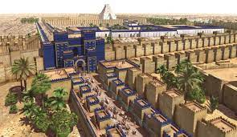

A quick set of slides on some images of Babylon
In what is now Iraq, Mesopotamia is an ancient civilization, where some of the most influencial people in history lived! You could see famous kings like Hammurabi, get yourself immortalized in sculpture, and live the Babylonian lifestyle.
Babylon was located on the massive Euphrates River which is half of the name Mesopotamia. Mesopotamia means between to rivers, the Tigris and Euphrates. These powerful rivers started up north and fed into the Gulf of Persia. Babylon was surrounded by desert which meant that when they fought they fought in harsh desert heat.
There where actually 2 Babylons! There was the original that was later sacked and there was the Neo-Babylonian Empire.
Babylon was a powerhouse when it came to trade and art. Under the lead of Hammurabi the city was turned beautiful while it expanded across Mesopotamia.
What to bring?
In order to prepare for your Babylonian trip, it is recommended you have the following objects:
A turban, to fit in with the rest of the people.
Offerings to the gods, to help the thriving mesapotamian cultural lifestyle. Gods include Anu (king of gods), Ea (god of water and knowledge), and Enlil (god of wind and earth).
But you can't have a Babylonian trip without:
- Visiting The Hanging Gardens of Babylon. The Hanging Gardens is one of the most popular locations in the world, even being part of the 7 wonders in the world!
Seeing the art, such as the Stele of Hammurabi.
The Stele of Hammurabi
Eating the food, such as beer and lamb stew.
Playing the sports. In Babylon, you could play racing and archery. You could also play Polo, the earliest known team sport.
Watching (and maybe joining) the ceromonies. In ancient Babylon, you could watch or join ceromonies of prayer and sacrifice, with special events at sun and moon eclipses.
You could visit some many places in Babylon! Some are:
The Etemenanki which was a ziggurat dedicated to the godly creator of Babylon, Marduk.
As previously stated, The Hanging Gardens of Babylon. These are a very popular place.
The rivers Mesopotamia is famous for its rivers, and Babylon is between arguably 2 of the greatest rivers, the Tigris river and the Euphrates river. These rivers helped Babylon and Mesopotamia to reach the lengths that it did, by giving the city and all it's people water.
The great god Marduk was the creator of Babylon. After he conquered the chaos spirit Tiamit he became the Lord of the Gods of Heaven and Earth. He later founded the great city Babylon.
The famous Hammurabi was the ruler under which Babylon flourished. At first he was just the ruler of Babylon but then after some cheeky ploys he was able to conquer cities from Larsa the way to Mari. He also created Hammurabi's Code. This was the set of laws that people would have to follow and was engraved on a stele (stee-lee).